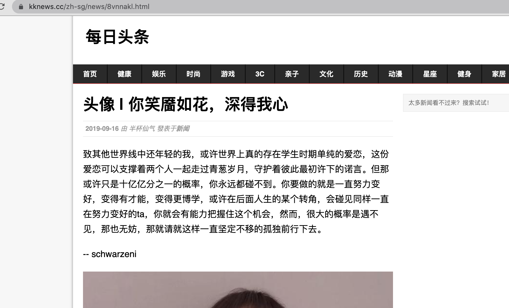

结束研一第三学期的最后一门课程的在线期末考试，宣告着我的研一正式结束（如果考试能都及格的话）。如今离2021年的新年也只差一百多天了，也就是说今年已经过去了大半，我最近在想，如果在没有新冠疫情的情况下再过一次2020会怎么样呢？凡事没有如果，我也想象不出来。
本片文章仅仅想以个人的视角，回顾和记录已经过去大半的2020年以及因为新冠疫情对我个人的生活种种所造成的改变。其中大部分都是只言片语，因为详细的细节都记不太清楚了。
我大约是在除夕那周听到媒体报道疫情的相关信息的，随后就是武汉封城，全国各地的医疗力量不断地向湖北集结，从那时起我们家每天晚饭的时候就看起了新闻联播，那个时候每天新闻联播的时长都超过了原本的半个小时，我向我父母调侃说，哪一天新闻联播的时长恢复正常了，就代表新冠疫情已经控制的差不多了。那段时间举国上下以及海外同胞都不停地向湖北捐款捐物，为了能容纳大量情况轻微的患者，政府在湖北各个城市都建立了方舱医院；在武汉，政府仅十几天的时间就建成了雷神山医院和火神山医院，建造过程全程通过网络平台直播。期间也发生了一些引起社会公众广泛讨论的事件，比如吹哨人李文亮、武汉红十字管理物资不利、八十高龄的钟南山、天价口罩、电影春节档全部撤档等等。我第一次亲身体会到我国的政治社会制度在应对重大灾难时的优越性，它有着团结全体民众的力量。
那个时候疫情只在国内出现，所以其它的一些国家纷纷都断绝了与中国的航空航运往来，同时宣布禁止中国人入境，有些国家还发布一些抹黑中国的言论，当然也有一些中国的盟友也第一时间向中国运来防疫物资。我没权对这些行为作出什么评论，因为每个决策的背后都隐藏着国际间复杂的政治纠葛。
现在回忆起来，新冠疫情刚开始爆发的那段时候，对于我生活上产生的唯一重大改变就是出门需要戴口罩了。同时，因为那段时间还在谈恋爱（目前已经不谈了），所以约会的时候少了许多去处，比如大部分餐馆歇业、电影院关门。我至今还记得本来应该人头攒动的新街口地下步行街空无一人一片萧条的样子，底下通道行人寥寥，两旁的小吃店大部分都拉上的卷帘门，任然坚持营业的商户都缩短了营业时间同时几乎都处于门可罗雀的状态。对了，如果你出门一次可能要被测量多次体温：坐地铁要测、进商场要测、进小区要测。可以想象，如果我那段时间没有谈恋爱而是一直保持原先的死宅状态，新冠疫情对于我来说应该只是存在于电视新闻里的。当时的我也没有想象到这次新冠疫情会持续如此之久。
大约是二月初吧，我养成了每天早晨一起来就通过手机查询昨日全国又新增了多少病例、新增了多少死亡患者，我现在依然记得当时的死亡的人数每天都是一千人左右。每天晚上的新闻联播时长依然超过了半个小时，每天都在报道：xx省第xx医疗队抵达湖北xx市进行支援、今天又建成了xx座方舱医院，同时xx座正在加紧建设。现在想想，奋战在一线不仅只有医生护士，还有那些建设方舱医院的建筑工人、维护治安的民警辅警、坚守一线的新闻工作者、制定计划预案的政府人员等等，这些人在疫情特殊时期负重前行，守护着他人的岁月静好，真的是非常非常感激他们。
因为疫情的影响，大学生就业变得更加困难，研究生扩招，我就读的东南大学蒙纳士联合研究生院计算机专业比去年多招了几百人。我听说东南大学软件学院也扩招了一百人。五月的时候跟两位高中同学聚会，他们都是二战上岸的，其中一位或多或少就得益于今年的研究生扩招。
一月新番中国漫《我的三体：章北海传》非常精彩，日漫《异度入侵》高开中走，没有烂尾。
日本动画《我的英雄学院》因为其作者在漫画中的夹带私货遭中韩读者的抵制，动画漫画全网下架。
由于春节结束之后部分产业开始复工复产，人口开始流动，各个省份开始逐渐推行健康码，用于记录你曾经去过的省市是否安全，学校也要求学生每日填写在线健康日报，并向导师报平安。
在这期间，除了和女朋友的约会，其它的时间我都是呆在家里的。
二月初，我的一颗牙齿因为龋坏掉了一块，但是因为疫情的原因，口腔医院关闭，最后在五月中旬才去医院就诊。
二月末，虽然寒假结束了，但是因为疫情的原因，学校将下学期的课程改为了线上教学。同时，新冠疫情在海外逐渐扩散开来，在国内感染人数得到控制的同时，国外的感染人数直线上升。曾今那些隔岸观火说中国风凉话的国家突然发现，他们也正处于危险之中。
我读的研究生属于中外合办性质，研一下学期为第二学期，研一暑假为第三学期，都是由蒙纳士大学的老师负责授课。上课时使用 Zoom 进行直播教学，而教学资源和作业都是在 Moodle 上完成。由于在入学前暑期英语桥时已经使用过 Moodle 了，所以可以很快地上手。同时，还需要在超星网校APP上学习东南大学的相关讲座，当时由于选择讲座的学生人数太多超出了服务器的承受范围，导致此APP多次崩溃。
本学期的课程分为两部分，Lecture 和 Tutorial，前者是老师通过 PPT 想我们讲解知识，后者是讲解相关的习题，分别在上午和下午完成，一周上四天课。个人感觉课程难度还行，上课经常摸鱼。
三月四月时，国内疫情得到基本控制，国家鼓励服务业开业，我所在的南京市政府发布了不同种类的消费优惠券鼓励市民消费。国内相关防疫物资的产能逐渐跟上了需求，我公公说仪征化纤的工厂花费了上亿元购置了几台熔喷布生产线，生产出来的产品由国家统一收购。
在这几个月里，我跟女朋友逛了玄武湖、红山动物园，一起去新街口沃尔玛购物，也去了一次她家里一起做菜做饭吃，在服务业逐渐恢复的时候去吃了海底捞、碳烤鱼、港式餐厅，她送了我一个挺贵的香水和一瓶她自制的奶茶。虽然出门就要戴口罩，出去一趟测了五六次体温，但是也算是一段不错的回忆吧。
由于美国疫情的爆发和总统特朗普发布的一些雷人言论，导致在国内出现了许多和他有关的梗以及恶搞视频。
导师在年初给我布置的相关的任务，但是由于学校课程比较多，所以向导师“请了假”，任务暂时没有进行下去了。
由于没有怎么运动，体重增多了不少，大约是70kg左右。
四月新番中的《昨日之歌》是一部超级棒的作品，个人非常喜欢。《隐瞒之事》不论是剧情还是画风都非常治愈，大赞。
也是在这一阶段，我渐渐变得有些浮躁了。我感觉这种浮躁大部分是因为缺乏计划的导致的。除了完成学校的作业外，我几乎没干过别的事情，也没阅读，状态越来越差。
时间来到了五月，b站的一则宣传片《后浪》引发了全网的讨论。“普通青年也配当后浪？”
国内疫情得到控制，美国疫情领跑全球。期间还发生了一些国际新闻：美国警察暴力执法导致美国全国爆发抗议游行、美国制裁中国华为、日本将2020东京奥运会延期一年、中印边境发生冲突、美国政府拟遣返中国留学生、中美互关大使馆等等。除了新冠病毒外，还有别的恶魔游走在人间。
先是因为我建议女朋友买 iPad Air 而不是 iPad Pro 让她不高兴了，之后又因为520没送礼物又惹她不高兴了。之后，每日在QQ上道早安不回，在线聊天态度也变得冷淡了。我觉得应该是没戏了，于是乎取消了QQ和微信的聊天置顶，将她的昵称改回了她的名字，删除了手机联系方式，之后也没再联系了，本来为她准备的生日礼物也没送出去，放到了书橱的最底层。已经交往有一年了，之前答应过她在和她结婚之前不会发生负距离关系，在交往的过程中也遵守的诺言。希望之后不要再有交集了吧。
在这期间听说了身边的同学收获了不错的实习offer，虽然研二不实习，但是也要为将来找工作做准备了，所以开始在 LeetCode 上做题了。同时在 Github 上新建了一个仓库，用于存储曾经做过的题目。自己也整了一个后面一年大概的学习计划表，希望自己可以好好执行，不过就我现在来看，计划执行的不是很好。
开始跑步了！因为已经有很长的时间没运动过了，而且在五月中旬看牙的时候发现了好多问题，觉得自己的身体不太行了，也是为了有一个更好的精神状态。刚开始的一段时间是在晚上九点钟出去跑，后面将时间提前到了下午五点，每次大约跑3.2km左右。上一次坚持跑步应该还是2018年考研的时候。
六月初，第二学期期末考试，开卷！当时我就想，如果没有疫情的话应该是闭卷考试，那样的话我可能都过不了，因为之前都是在摸鱼的，几乎都没听课。对了，课程平时的作业大部分都是以小组为单位，两至三人规模，我在好几个小组里都当了组长，有一个团队管理技巧蛮实用的：规定每个成员的每个任务的完成时间，精确到分钟。这样的话才能在后面有理有据地催促组员完成任务。如果任务的截止日期定的是“明天晚上”，那么真正到明天晚上了你就不知道该怎么催了，因为“晚上”的范围太宽泛了，应该定为“明天晚上十点半”。
因为疫情的原因，各个社会服务机构加速推进业务电子化，比如说去医院看病需要使用手机前往相应的微信公众号上进行预约，使用支付宝中的苏康码验证你是否去过疫情高危地区，餐厅点餐需要使用手机上的微信小程序，公园购票需要在手机上的相关程序中购买，就连菜场的小商贩也在自己的摊子前挂上了电子支付收款二维码。在这信息化的社会，如果是不使用电子产品、不熟悉互联网的人会不会就变成社会遗弃的对象了呢？
六月中旬，第三学期开始了，和上一学期一样还是四门课，但是都是由一位老师授课，所以授课质量就下降了，而我依旧在上课的时候摸鱼。其中两门课的大作业是三人组队分别用 ASP.NET 和 JSF+EJB 按照要求完成一个 Web 项目，由于我觉得多人协作太麻烦了，就一人包办了。期末考试为闭卷，因为第二学期期末考试发现有人的答案和网上的差不多，开卷不等于可以查看课程资料之外的东西。采用的是一对一监考，考试时共享桌面，全程开着电脑摄像头和麦克风，共享电脑桌面，不能使用多个显示器，只能带几页纸的笔记，考试前使用手机拍摄身边考试环境。我用虚拟机不就行了吗。。。
七月的时候下了很多雨，长江发生了洪水。我家旁边的秦淮河水位上涨了很多，淹过了二级河堤，水位直逼一级河堤。同时天气也非常凉快，整个七月几乎都没什么高温的日子。
国内的青少年科创大赛天才小学生和国外的抖音海外版遭美国封杀都闹得沸沸扬扬的。
七月新番《租借女友》开播了，四月的时候补完了漫画并一直追着漫画的更新进度。国内的新番《灵笼》也非常精彩。
Github搞了一个 Arctic Code Vault 计划，将开源代码封存在北极，计划保存一千年。1020年还是北宋呢，3020年会是什么样子呢？
我爸前面因为疫情的原因都是在家里通过视频远程验货的，八月末已经恢复之前的工作状态去厂里验货了。前面居家办公的那段时间也有工资拿，只不过比之前的要少，但是总比没有强。我妈妈已经退休了，疫情并没有影响到她的退休金。
九月初我又去看了一次牙，进医院的时候已经不用登记个人信息监测体温查看苏康码了，只需要佩戴口罩，这说明国内的新冠疫情已经得到了总体的控制。
学校是八月初开学了，研二回苏州，因为我在七月的时候回学校拿了一次东西，并不想这么着急返校，所以提交了延迟返校申请表，预计十月初国庆结束之后返校。之前有传闻说东南大学研二上不返校，这条新闻被顶上了知乎热搜头条，不过现在本部的同学也陆续返校了。
2020年的前三分之二被新冠疫情搅乱了，但是面对生活中的不确定因素是我们每个人的必修课。要更加珍惜余下的日子，好好地活下去。
昨天无聊用谷歌百度搜索我那个特殊的ID “schwarzeni” ，结果搜出了一段我曾今写过但是早已忘记的话，非常感谢有人代为我收藏，就当是来自于过去的自己的鼓励吧：

2020.09.06 于 南京